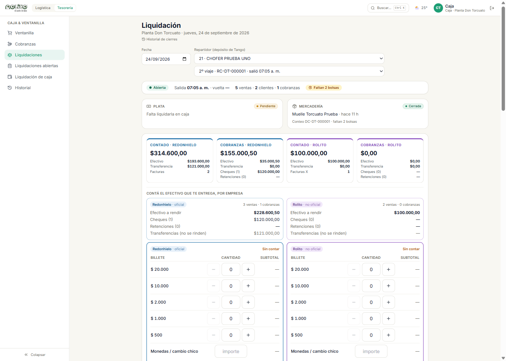
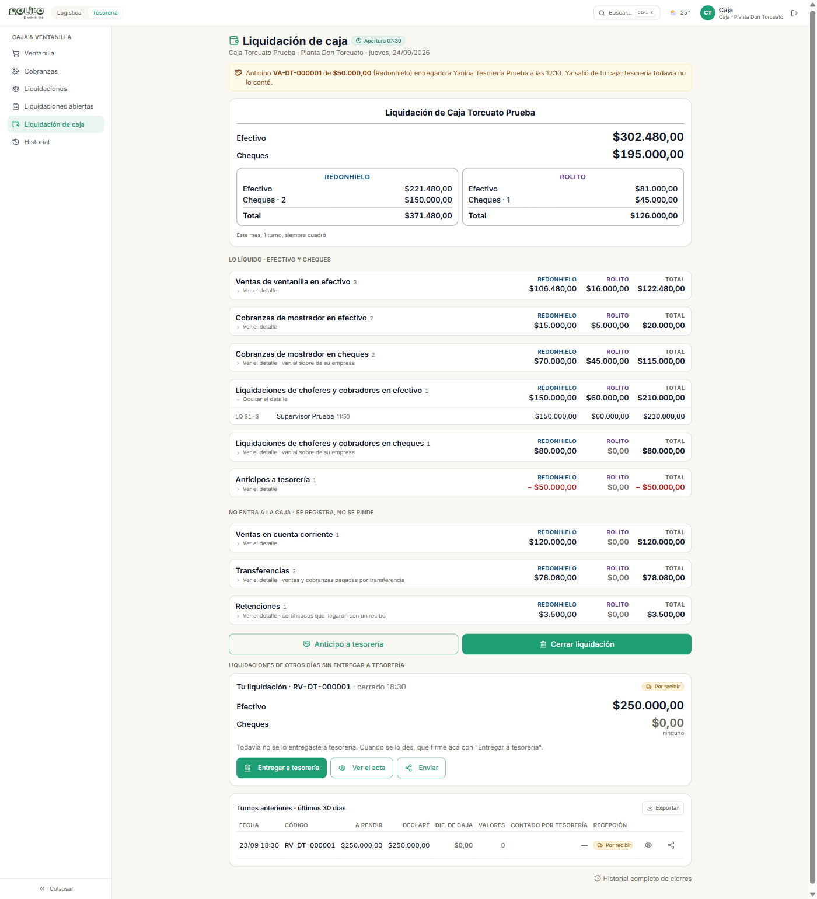
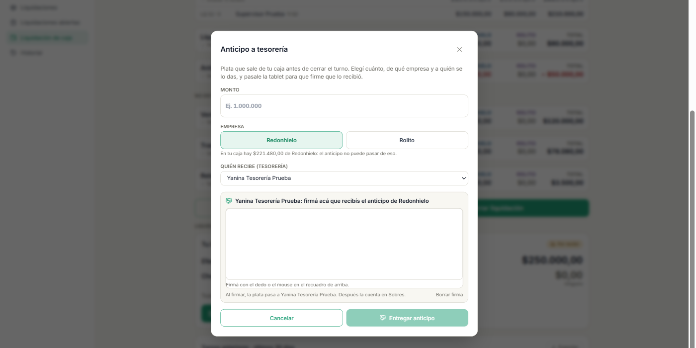
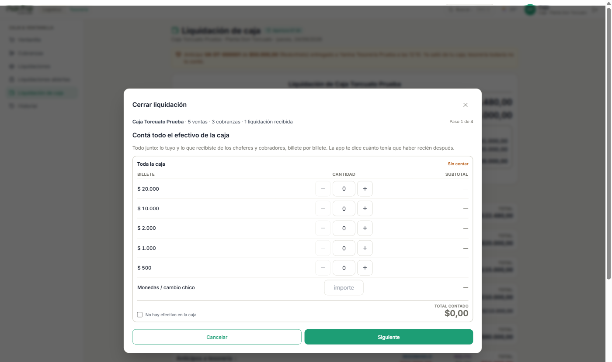
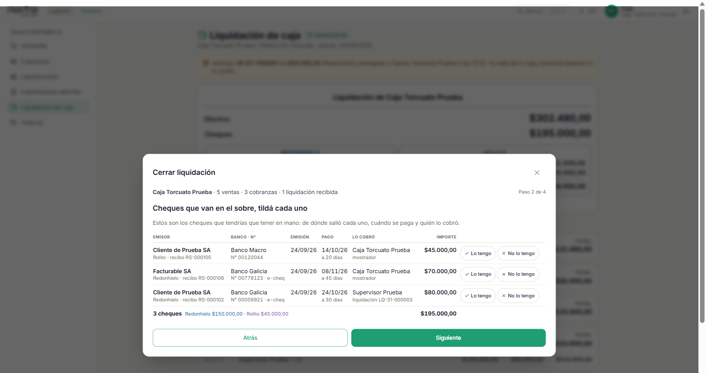
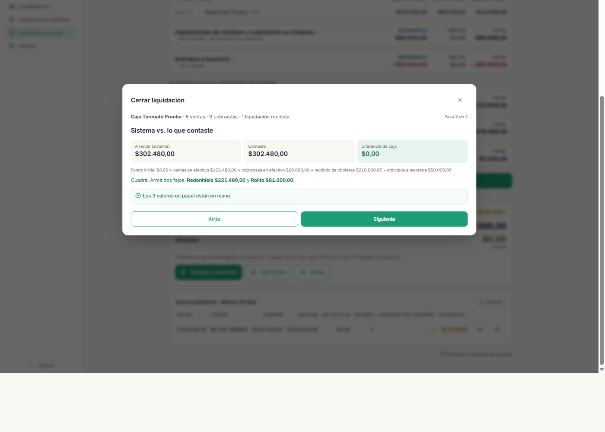
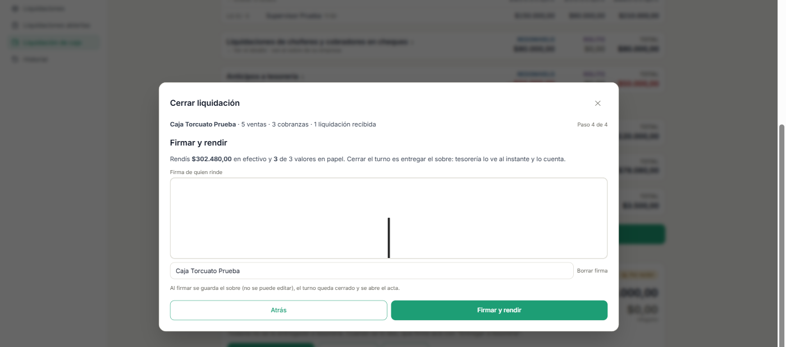
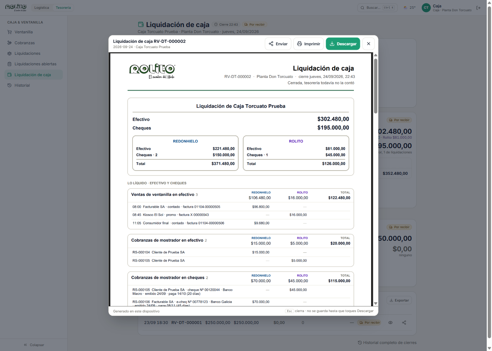
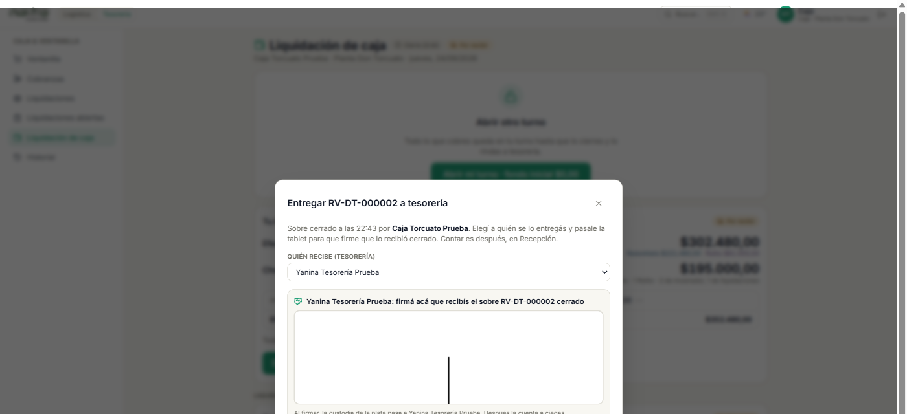
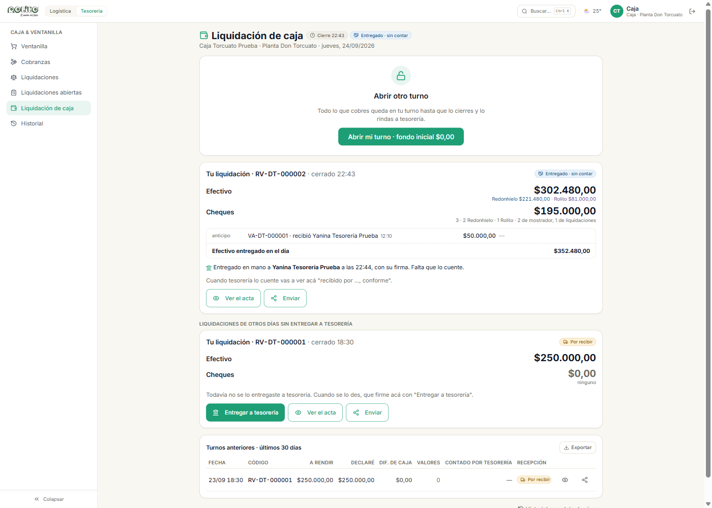

Tu turno en la ventanilla, la liquidación de choferes y cobradores, y cómo cerrás y entregás tu Liquidación de caja.
Versión del 24 de septiembre de 2026 · corresponde a la app en producción desde esa fecha.
Contenido
Cómo se mueve la plata
Los cuatro lugares
Las tres firmas
Caja
Abrir el turno
Durante el día: ventas, cobranzas y liquidar a choferes y cobradores
Leer tu Liquidación de caja
Anticipo a tesorería
Vale de caja
Cerrar la liquidación
Entregar la liquidación a tesorería, en mano
Después de entregar
Avisos automáticos
Preguntas frecuentes
1 · Cómo se mueve la plata
La app sigue la plata por etapas. En cada etapa hay una persona responsable y una firma que lo deja escrito. La idea es que ninguna caja quede sin rastrear: en cualquier momento se puede ver dónde está cada peso y quién lo tiene.
Los cuatro lugares
1 · En la calleChoferes y cobradores con plata que todavía no liquidaron con caja.
2 · En cajaTurnos abiertos de ventanilla y liquidaciones de caja cerradas que todavía no se entregaron.
3 · Entregada, sin contarLiquidaciones que tesorería ya recibió en mano, con firma, y todavía no contó.
4 · Contada y validadaLo que tesorería contó, validó y firmó. Ya entró.
Tesorería ve estos cuatro números apenas entra a la app. Caja los ve en su propia liquidación y en la pantalla de liquidaciones abiertas.
Las tres firmas
1Caja cierra Cuenta el efectivo billete por billete, tilda los cheques y firma su liquidación. Desde ahí no se edita más.
2Tesorería recibe en mano Caja le entrega el sobre cerrado y tesorería firma en la tablet de caja que lo recibió. Todavía no se cuenta.
3Tesorería cuenta y valida En su pantalla, cuenta billete por billete, tilda los cheques, deja motivo si hay diferencia y firma. Sale el acta.
Regla de oro. Sin la firma 2 no hay firma 3: tesorería no puede contar una liquidación que caja no le entregó en mano. Y sin la firma 3 la plata sigue figurando como "entregada, sin contar" para todo el mundo.
Dos empresas, siempre. Toda la plata se mira partida en Redonhielo (contado con factura electrónica) y Rolito (promo, factura X). Cada cobranza trae su empresa. En las pantallas de caja siempre vas a ver tres columnas: Redonhielo · Rolito · Total.
Parte 2
Caja
El puesto de caja hace dos cosas con la plata: vende y cobra en la ventanilla, y recibe la rendición de los choferes y cobradores cuando vuelven. Todo eso termina en una sola cosa por turno: tu Liquidación de caja, que cerrás, firmás y entregás en mano a tesorería.
1.1 · Abrir el turno
Entrá a la app con tu DNI y contraseña y andá a Tesorería › Liquidación de caja.
Tocá Abrir mi turno. El fondo inicial es $0: hoy no hay fondo fijo.
Desde ese momento la ventanilla vende y la app registra la hora de apertura en tu liquidación.
Ojo. Sin turno abierto la ventanilla no vende. Y si te quedó un turno de otro día sin cerrar, la app no te deja abrir uno nuevo hasta que cierres ese: te lo muestra con su fecha y el botón para cerrarlo.
1.2 · Durante el día
Ventas de ventanilla y cobranzas de mostrador se cargan desde sus pantallas de siempre (Ventanilla y Cobranzas). Cada venta o cobranza que hacés entra sola en tu liquidación, con su empresa y su medio de pago.
Liquidar a un chofer o cobrador es recibirle la plata del reparto. Se hace en Tesorería › Liquidaciones:
Elegí la fecha, el repartidor (por depósito de Tango) y el viaje, si ese día hizo más de uno. La pantalla arma sola el cálculo del viaje: ventas de contado, promo, cuenta corriente, cobranzas, cheques, retenciones y lo que muelle contó en la descarga.
Contá el efectivo que te entrega, por empresa, en las dos tablas de billetes que están en la misma pantalla: una para Redonhielo y otra para Rolito ($20.000, $10.000, $2.000, $1.000, $500 y monedas). No hay atajo de "total directo": se cuenta billete por billete. Si de una empresa no recibís efectivo, marcá "no recibí efectivo". Hasta que las dos tablas no estén contadas, el botón de cerrar no se habilita.
Tocá Cerrar liquidación. Se abre el cierre:
Cheques y retenciones: tildá cada uno al recibirlo. Uno que no te entregan queda "No entregado" con su motivo. Ninguno puede quedar sin decidir.
Si el efectivo no cuadra con el sistema, elegí el motivo (faltante del repartidor, vuelto mal dado, billete falso o dañado, error de carga, otro) y escribí qué pasó.
Dos firmas: el repartidor firma la conformidad con lo rendido y vos firmás que recibiste.
Al confirmar se guarda el cierre (no se edita más) y sale la liquidación en PDF con una hoja de fajo por empresa, para enrollar cada fajo.

Liquidación de un chofer: arriba el estado del viaje (plata y mercadería), en el medio el resumen por empresa y abajo las dos tablas de billetes para contar lo que entrega.
Mercadería. Si muelle contó la descarga y falta mercadería, la pantalla lo muestra en rojo. Un tema de stock nunca traba tu turno: podés pedir autorización o "Cerrar con desvío observado" con motivo. Queda escrito con nombre y motivo.
Lo que recibiste de cada chofer entra a tu caja. Ese efectivo y esos cheques pasan a formar parte de tu Liquidación de caja, en el bloque "Liquidaciones de choferes y cobradores".
1.3 · Leer tu Liquidación de caja
La pantalla Liquidación de caja es tu resumen del turno en vivo. Se lee de arriba hacia abajo:

Liquidación de caja: la tarjeta de arriba resume el turno; abajo, cada bloque dice de dónde sale cada peso.
Bloque
Qué es
Liquidación de (tu nombre)
Efectivo y Cheques del turno, en grande, y los dos recuadros Redonhielo / Rolito con Efectivo · Cheques · Total de cada empresa. Fecha, turno y hora de apertura y cierre.
Lo líquido · efectivo y cheques
Lo que tiene que estar en tu caja: ventas de ventanilla en efectivo, cobranzas de mostrador en efectivo y en cheques, liquidaciones de choferes y cobradores en efectivo y en cheques, y los anticipos que ya le diste a tesorería (restan).
No entra a la caja
Se registra pero no se rinde: ventas en cuenta corriente, transferencias y retenciones. Están para que el total del día cierre, no para contarlos.
Tu liquidación · RV-…
Aparece cuando cerraste: código, acta, y el estado de la entrega y la recepción por tesorería.
Cada bloque se abre y muestra los renglones uno por uno, con el importe debajo de la columna de su empresa. Los cheques se listan con número, banco, fecha de emisión y fecha de pago.
1.4 · Anticipo a tesorería
Si en medio del turno tesorería te pide plata (o la caja está muy cargada), podés darle un anticipo sin cerrar el turno.
En Liquidación de caja tocá Anticipo a tesorería.
Elegí el monto, la empresa de la que sale (no puede pasar de lo que hay de esa empresa en tu caja) y quién recibe (una persona de tesorería).
Pasale la tablet: la persona de tesorería firma que lo recibió y tocás Entregar anticipo.
El anticipo sale con código VA-…, se descuenta de tu caja (lo ves en el bloque "Anticipos a tesorería" y en una franja arriba de la pantalla) y tesorería lo cuenta como a cualquier liquidación. Podés hacer varios en el mismo turno.

Anticipo: monto, empresa, quién recibe y la firma de esa persona en tu tablet.
1.4 bis · Vale de caja
Muchas veces sale plata de la caja para alguien que no es tesorería: un adelanto a un empleado, combustible para un chofer, un pago chico a un proveedor. Eso es un vale de caja: la plata sale contra un papel firmado por quien la recibe, y ese papel viaja en tu sobre.
En Liquidación de caja tocá Vale de caja.
Poné el importe, la empresa de la que sale (no puede pasar de lo que hay de esa empresa en tu caja), quién recibe (nombre y, si querés, DNI) y el motivo escrito a mano.
Pasale la tablet: la persona firma que recibió la plata y tocás Entregar vale. El vale sale numerado (VC-…), se abre para imprimirlo y queda en el bloque "Vales de caja", restando del efectivo.
No hace falta autorización ni hay tope. El control está en el papel firmado y en que tesorería lo cierra después: con el comprobante del gasto, con un descuento de sueldo o porque devolvieron la plata. Al cerrar la liquidación vas a tildar cada vale como "Lo tengo", igual que los cheques, y va adentro del sobre.
1.5 · Cerrar la liquidación
Al final del turno, con todos los choferes ya liquidados:
En Liquidación de caja tocá Cerrar liquidación.
Contá todo el efectivo de la caja en una sola tabla de billetes (ya no importa de qué empresa es cada billete: caja junta todo en un solo sobre). El total sale solo.
Cheques y vales que van en el sobre: tildá cada uno. La lista dice de dónde salió cada cheque, cuándo se paga y quién lo cobró; los vales de caja aparecen debajo con quién los recibió y el motivo. Si uno no lo tenés, dejalo sin tildar y escribí el motivo. Las retenciones no se confirman acá: van por otro circuito.
Sistema vs. lo que contaste. La app recién ahora te dice cuánto tenía que haber y cómo se compone. Si cuadra, te dice cómo armar los dos fajos (Redonhielo y Rolito) que van juntos en el sobre. Si hay diferencia, elegí el motivo y escribí qué pasó (obligatorio).
Firmar y rendir. Firmá con el dedo y poné tu nombre. Al firmar se guarda el sobre (no se puede editar), el turno queda cerrado y se abre el acta.

Paso 1 de 4: toda la caja en una sola tabla de billetes. El total sale solo.

Paso 2: los cheques que tendrías que tener en mano, con "Lo tengo" / "No lo tengo".

Paso 3: sistema contra lo contado, cómo se compone y cómo armar los fajos.

Paso 4: firma de quien rinde. Al firmar, el turno queda cerrado.

El acta se abre en el visor apenas firmás: es la misma planilla de la pantalla. Enviar, Imprimir o Descargar son clics tuyos.
No se puede cerrar si… hay un recibo de cobranza con anulación esperando autorización, o hay una anulación de factura pendiente. Primero se resuelve eso.
El acta es la misma planilla que ves en pantalla. Sale en PDF con la tarjeta, los dos recuadros por empresa, los bloques con sus renglones, los billetes contados y las tres firmas. Se abre en el visor: desde ahí se imprime, se descarga o se envía. Nada se descarga solo.
1.6 · Entregar la liquidación a tesorería, en mano
Cerrar no es entregar. La plata sigue siendo tuya hasta que tesorería firma que la recibió, y eso se hace en tu tablet:
Con el sobre cerrado en la mano, en Liquidación de caja tocá Entregar a tesorería.
Elegí quién recibe (una persona de tesorería, no vos).
Pasale la tablet: firma que recibió el sobre cerrado y tocás Entregar y firmar. Contar es después, en la pantalla de tesorería.
Si te quedó una liquidación de otro día cerrada y sin entregar, la vas a ver en el bloque "Liquidaciones de otros días sin entregar a tesorería", con el mismo botón. Hasta que no la entregues, tesorería no la puede contar.

Entrega en mano: elegís quién recibe y esa persona firma en tu tablet que recibió el sobre cerrado.
1.7 · Después de entregar
En "Tu liquidación" ves: Entregado en mano a (nombre) y, cuando tesorería la cuenta, Contó (nombre) · conforme o con diferencia con el motivo.
Historial lista tus cierres de los últimos 30 días con el acta de cada uno.
Liquidaciones abiertas muestra los choferes y cobradores de cualquier fecha que todavía no liquidaron con caja. Si hay dos o más, la app avisa arriba en amarillo.
Si después del cierre se anula una venta de ese día, la anulación aparece marcada en el historial ("anulada después de cerrar"); los importes del cierre no cambian.

Después de entregar: "Entregado en mano a …, con su firma. Falta que lo cuente." Abajo, una liquidación de otro día que todavía no se entregó.
3 · Avisos automáticos
Tres veces por día, a las 6, a las 13 y a las 18, la app revisa qué quedó colgado y avisa por notificación (push) a caja, tesorería y gerencia, y por mail a la lista configurada en Ajustes generales:
Viajes sin liquidar: remitos de carga y cobradores de días anteriores sin liquidación de caja.
Liquidaciones sin contar: sobres y anticipos entregados o cerrados que tesorería no contó.
Cajas de otro día sin cerrar: turnos abiertos con fecha anterior a hoy.
El mismo aviso aparece como franja amarilla arriba de Liquidación de caja y de Recepción, con el link a Liquidaciones abiertas. Es un aviso: nunca frena la operación.
4 · Preguntas frecuentes
Cerré la liquidación y me equivoqué en un billete. El cierre no se edita. Tesorería lo va a ver como diferencia al contar y queda con motivo y nota. Avisale antes de entregar para que lo escriba en la nota.
Tesorería no está para firmar la entrega. La liquidación queda cerrada y sin entregar (carril 1 de tesorería, y en tu pantalla "Todavía no se lo entregaste"). Cuando aparezca, la entregás con la firma, aunque sea otro día: el bloque "Liquidaciones de otros días sin entregar" queda a la vista hasta entonces.
Un chofer volvió tarde y ya cerré mi turno. Lo liquidás igual desde Liquidaciones; esa plata entra en tu turno siguiente (la app la arrastra hasta 7 días). Si el chofer dejó la plata en el buzón, la contás al abrir el turno siguiente y la liquidás ahí.
Tesorería no está y alguien necesita plata de la caja. Es un vale de caja: lo registrás con "Vale de caja", la persona firma en la tablet, se imprime el vale y sale de tu efectivo. No hace falta autorización. El papel va en el sobre y tesorería lo cierra después.
Un cheque de un chofer no me lo entregó. En el cierre de esa liquidación lo dejás sin tildar con el motivo. No aparece en tu sobre ni tesorería te lo va a pedir.
Falta mercadería en la descarga de un chofer, ¿cierro igual? Sí. Un tema de stock nunca traba el turno de caja: cerrás con el faltante autorizado o "con desvío observado" y motivo. Queda escrito en rojo en la liquidación y en el PDF.
¿Dónde veo la plata que sigue en la calle? Tesorería, en la tira de arriba ("En la calle") y en Liquidaciones abiertas. Caja, en Liquidaciones abiertas.
Rolito · app de gestión · manual de caja · 24/09/2026. Las pantallas pueden cambiar de detalle; el circuito (cerrar → entregar en mano → contar y validar) es el que manda.